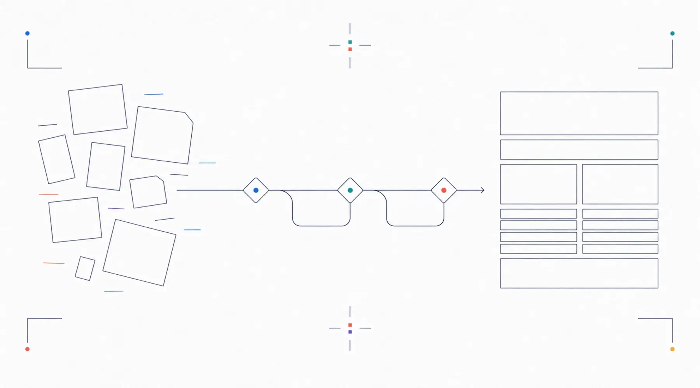
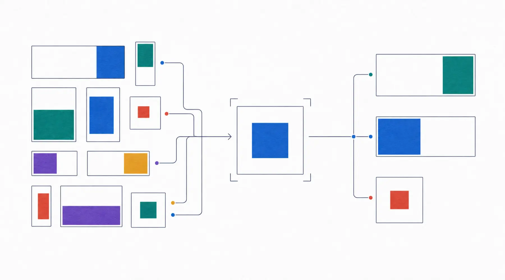
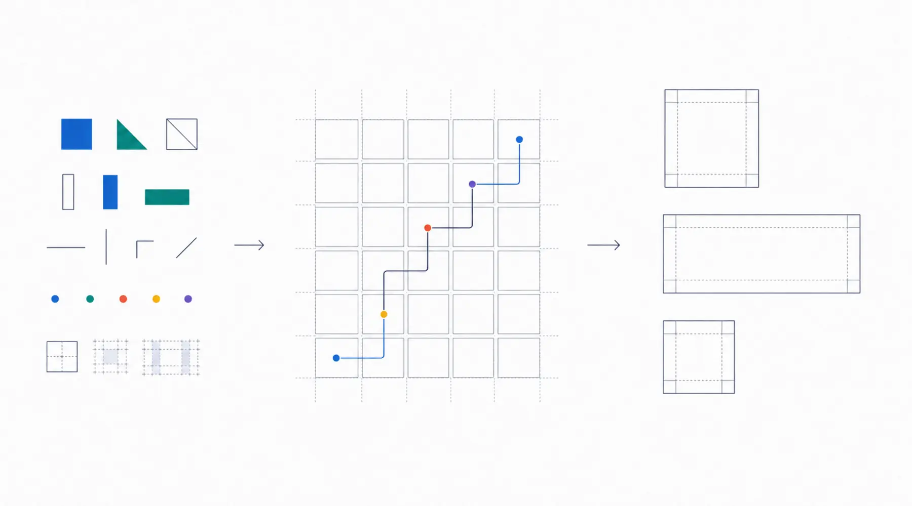
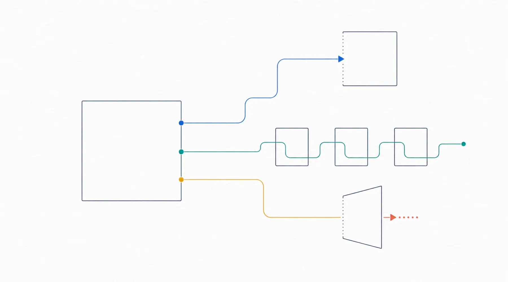

制作プラン・料金
4つの範囲から、
今の状況に近いものを。
ページ数と、文章・画像をどこまで用意できるかで選べます。判断が難しい項目があれば、プラン未定のまま相談できます。
- 制作費
- 80,000円 〜 220,000円
- 公開・管理
- 月額 5,500円 / 年額 50,000円
- 支払い
- 着手金50% ／ 納品前50%
買い切り
別契約。必須ではありません
はじめて
まずは1ページでWeb上の窓口を作りたい人 80,000円
| シンプル
必要な情報を3ページ前後で整えたい人 120,000円
| 標準
5ページ前後で事業内容をしっかり伝えたい人 150,000円
| おまかせ
原稿・画像・簡易ロゴも一緒に整えたい人 220,000円
| |
|---|---|---|---|---|
| ページ数 | 1ページ | 3ページ前後 | 5ページ前後 | 5ページ前後 |
| 文章整理 | 支給原稿の誤字・見出しを調整 | フォーム回答を3ページへ整理 | 情報を5ページへ配分し、見出しと順序を調整 | 回答内容から見出し・紹介文・導線文を作成 |
| 画像準備 | なし（素材はご支給） | 商用利用可能な候補素材を少数提案 | 商用利用可能な素材をページごとに選定・調整 | 選定・生成・トリミング・ページ別調整 |
| 簡易ロゴ | なし（既存ロゴ使用） | なし（既存ロゴ使用） | なし（既存ロゴ使用） | Webサイト用の簡易ロゴ1案 |
| 外部サービス導線 | なし | なし | なし | フォーム・LINE・SNSへの導線を整理 |
| 計測設定 | 計測タグを追加できる構造 | 計測タグを追加できる構造 | 計測タグを追加できる構造 | GA4・Search Consoleの初期設定支援 |
| 修正回数 | 1回 | 1〜2回 | 1〜2回 | 1〜3回 |
| 納期目安 | 1〜2週間 | 2〜3週間 | 3〜4週間 | 4〜6週間 |
| 詳しく見る | 詳しく見る | 詳しく見る | 詳しく見る |
含む 含まない、または別途 記号の意味は各セルの文章にも書いています。
まずは1ページでWeb上の窓口を作りたい人
- ページ数
- 1ページ
- 文章整理
- 支給原稿の誤字・見出しを調整
- 画像準備
- なし（素材はご支給）
- 簡易ロゴ
- なし（既存ロゴ使用）
- 外部サービス導線
- なし
- 計測設定
- 計測タグを追加できる構造
- 修正回数
- 1回
- 納期目安
- 1〜2週間
必要な情報を3ページ前後で整えたい人
- ページ数
- 3ページ前後
- 文章整理
- フォーム回答を3ページへ整理
- 画像準備
- 商用利用可能な候補素材を少数提案
- 簡易ロゴ
- なし（既存ロゴ使用）
- 外部サービス導線
- なし
- 計測設定
- 計測タグを追加できる構造
- 修正回数
- 1〜2回
- 納期目安
- 2〜3週間
5ページ前後で事業内容をしっかり伝えたい人
- ページ数
- 5ページ前後
- 文章整理
- 情報を5ページへ配分し、見出しと順序を調整
- 画像準備
- 商用利用可能な素材をページごとに選定・調整
- 簡易ロゴ
- なし（既存ロゴ使用）
- 外部サービス導線
- なし
- 計測設定
- 計測タグを追加できる構造
- 修正回数
- 1〜2回
- 納期目安
- 3〜4週間
原稿・画像・簡易ロゴも一緒に整えたい人
- ページ数
- 5ページ前後
- 文章整理
- 回答内容から見出し・紹介文・導線文を作成
- 画像準備
- 選定・生成・トリミング・ページ別調整
- 簡易ロゴ
- Webサイト用の簡易ロゴ1案
- 外部サービス導線
- フォーム・LINE・SNSへの導線を整理
- 計測設定
- GA4・Search Consoleの初期設定支援
- 修正回数
- 1〜3回
- 納期目安
- 4〜6週間
診断結果からプランを自動で決めません。ページ数と準備状況を比べ、判断が難しい項目だけプラン未定のままご相談ください。
※ 料金は買い切りの制作費です。（公開前に確定: 消費税の表示方針） ※ 公開・管理プランは別途お選びいただけます。
四つのプランに共通すること
- 問い合わせにつながりやすい導線を整えます
- 検索エンジンに伝わりやすい基本設定を行います
- 事業内容が伝わる構成に整理します
- 着手金50%、納品前50%
- 公開・管理プランは別途選択できます
- 検索順位や問い合わせ件数は保証しません
修正回数の数え方 — 修正1回は、確認期間内にまとめてご連絡いただいた修正指示一式を指します。当初の構成を変えるページ追加、デザイン変更、機能追加は別途見積もりです。
「文章整理」と「画像準備」の中身
プランによって、どこまで手を入れるかが変わります。

文章整理
いただいた原稿やフォーム回答を、見出し・本文・導線文の順に整理します。
- はじめて — 支給原稿の誤字脱字と見出しを軽く整える
- シンプル — フォーム回答を3ページへ分け、既存の文章を短く整える
- 標準 — 情報を5ページへ配分し、ページごとの見出しと読む順序を整える
- おまかせ — 回答内容から見出し・紹介文・導線文を作成
取材を伴う長文コピー、SEO記事、ブランドメッセージの開発は別見積もりです。

画像準備
商用利用可能な素材や生成画像から選び、ページに合う形へ調整します。
- はじめて — なし（素材はご支給）
- シンプル／標準 — 選定と簡易調整
- おまかせ — 選定・生成・トリミング・調整
写真撮影、完全オリジナルイラスト、大量画像は別見積もりです。
おまかせプランに含まれるもの
簡易ロゴと外部サービス導線は、おまかせプランのみの対応範囲です。

簡易ロゴ 1案
Webサイトで使える簡易ロゴ1案です。追加案や用途展開はロゴ制作オプション（15,000円〜）、商標調査やブランド戦略を含む設計は別途相談になります。

外部サービス導線
Googleフォーム、LINE、SNSなどへの導線を整理します。各サービスの実接続と設定は公開作業時に行います。
プランごとの詳細
80,000円
買い切り／1ページ
はじめてプラン
まずは1ページでWeb上の窓口を作りたい人
このプランに含まれるもの
- 文章整理支給原稿の誤字・見出しを調整
- 計測設定計測タグを追加できる構造
このプランでは行わないこと
- 画像準備素材はご支給
- 簡易ロゴ既存ロゴ使用
- 外部サービス導線なし
支払い: 着手金50%（制作着手前）、残金50%（公開または納品前）
120,000円
買い切り／3ページ前後
シンプルプラン
必要な情報を3ページ前後で整えたい人
このプランに含まれるもの
- 文章整理フォーム回答を3ページへ整理
- 画像準備商用利用可能な候補素材を少数提案
- 計測設定計測タグを追加できる構造
このプランでは行わないこと
- 簡易ロゴ既存ロゴ使用
- 外部サービス導線なし
支払い: 着手金50%（制作着手前）、残金50%（公開または納品前）
150,000円
買い切り／5ページ前後
標準プラン
5ページ前後で事業内容をしっかり伝えたい人
このプランに含まれるもの
- 文章整理情報を5ページへ配分し、見出しと順序を調整
- 画像準備商用利用可能な素材をページごとに選定・調整
- 計測設定計測タグを追加できる構造
このプランでは行わないこと
- 簡易ロゴ既存ロゴ使用
- 外部サービス導線なし
支払い: 着手金50%（制作着手前）、残金50%（公開または納品前）
220,000円
買い切り／5ページ前後
おまかせプラン
原稿・画像・簡易ロゴも一緒に整えたい人
このプランに含まれるもの
- 文章整理回答内容から見出し・紹介文・導線文を作成
- 画像準備選定・生成・トリミング・ページ別調整
- 簡易ロゴWebサイト用の簡易ロゴ1案
- 外部サービス導線フォーム・LINE・SNSへの導線を整理
- 計測設定GA4・Search Consoleの初期設定支援
このプランでは行わないこと
- —比較表の項目はすべて含まれます
支払い: 着手金50%（制作着手前）、残金50%（公開または納品前）
自分で用意するもの / クルーアセントが整えるもの
プランによって境目が動きます。着手前にここを合わせておくと、納期がずれにくくなります。
お持ちでないものがあっても構いません。何が無いかを教えていただければ、そこから相談できます。
必要なものだけ追加できます
- 追加1ページ20,000円〜
- ロゴ制作オプション15,000円〜
- 画像追加準備5,000円〜
- 公開後の大幅修正別途見積もり
※ 料金は買い切りの制作費です。（公開前に確定: 消費税の表示方針）
サーバー、ドメイン、公開後の管理、契約範囲外の追加作業は別です。第三者の写真・フォント等は各ライセンスに従い、納品物と利用範囲は見積もり・制作条件で明示します。